النماذج التوليدية الهرمية للعناقيد النجمية من عمليات المحاكاة الديناميكية المائية
الملخص
يكون تكوين النجوم في السحب الجزيئية متكتلًا ومتجمعًا بشكل هرمي. تظهر البنية الكسورية أيضًا في عمليات المحاكاة الهيدروديناميكية للسحب المكونة للنجوم. تمثل محاكاة تكوين مجموعات نجمية واقعية باستخدام عمليات المحاكاة الهيدروديناميكية تحديًا حسابيًا، مع الأخذ في الاعتبار أن النتائج المتوسطة إحصائيًا لدفعات كبيرة من عمليات المحاكاة هي فقط التي يمكن الاعتماد عليها، وذلك بسبب الطبيعة الفوضوية لمشكلة الجسم الجاذبية . في حين أنه يمكن إنتاج مجموعات كبيرة من الشروط الأولية لتشغيل الجسم عن طريق المحاكاة الهيدروديناميكية لتكوين النجوم، إلا أن هذا مكلف للغاية من حيث الوقت الحسابي. نحن هنا نعالج هذه المشكلة من خلال تقديم تقنية جديدة لتوليد مجموعات عديدة من الشروط الأولية الجديدة من مجموعة معينة من كتل النجوم ومواقعها وسرعاتها من خلال محاكاة هيدروديناميكية. نحن نستخدم التجميع الهرمي في مساحة الطور لإبلاغ التمثيل الشجري للعلاقات المكانية والحركية بين النجوم. يشكل هذا الأساس للتوليد العشوائي لمجموعات جديدة من النجوم التي تشترك في البنية العنقودية للمجموعات الأصلية ولكن لها كتل ومواقع وسرعات مختلفة بشكل فردي. نحن نطبق هذه الطريقة على مخرجات عدد من عمليات محاكاة تكوين النجوم الهيدروديناميكية، ومقارنة الظروف الأولية المولدة بالظروف الأصلية من خلال سلسلة من الاختبارات الكمية، بما في ذلك مقارنة توزيعات الكتلة والسرعة والبعد الكسري. أخيرًا، قمنا بتطوير كل من العناقيد النجمية الأصلية والمولدة باستخدام رمز الجسم المباشر، وحصلنا على تطور مماثل نوعيًا.
keywords:
ISM: الكينماتيكا والديناميكية - العناقيد المفتوحة والارتباطات: عام - ISM: السحب - الطرق: عددية - الطرق: إحصائية1 مقدمة
جزء كبير من تكوين النجوم يحدث في مجموعات (2003ARA&A..41...57L؛ ولكن انظر أيضًا النتائج الأخيرة التي توصل إليها 2019MNRAS.486.5838R و2020MNRAS.495..663W)، والتي متكتلة وذات هيكل هرمي (larson95; 2009MNRAS.392..868B; 2019A&A...629A.135D). غالبًا ما تُظهر العناقيد النجمية الشابة بصمات الكسورية (Cartwright09; Kuhn19)، والحركات المعقدة بين المجموعات الفرعية (Cantat-Gaudin19)، وربما الدوران (Henault-Brunet12). بالإضافة إلى ذلك، فإن الطرد المبكر للغاز بسبب الرياح النجمية وانفجارات المستعرات الأعظمية أخرج العناقيد الشابة من التوازن الديناميكي، مما تسبب في مرحلة التوسع (hills80; goodwin06; Baumgardt07; pfalzner09). إن فهم التطور المبكر للمجموعات النجمية له أهمية أساسية لتفسير المراحل اللاحقة من حياتها. على سبيل المثال، أظهر 2017NatAs...1E..64C أن توقيع الدوران من السحابة الجزيئية الأم يستمر في محاذاة السبينات النجمية في بعض العناقيد المفتوحة، حتى اليوم. تم تأكيد الدوران في العناقيد النجمية الشابة والمفتوحة من خلال عمليات المحاكاة العددية (على سبيل المثال، 2016A&A...591A..30L; 2017MNRAS.467.3255M; 2020MNRAS.496...49B). أيضا ملاحظات العناقيد الكروية تُظهر تواقيع الدوران، أحيانًا مع تأثيرات ديناميكية كبيرة ((2013ApJ...772...67B; 2014ApJ...787L..26F; 2018ApJ...860...50F; 2018MNRAS.473.5591K; 2021MNRAS.506..813D)) والتي ربما تكون مطبوعة في المراحل الأولى من تطورها.
تعد محاكاة الأجسام الجاذبية أداة رئيسية لنمذجة التطور المبكر للعناقيد النجمية، لكنها غالبًا ما تبدأ من شروط أولية مثالية إلى حد ما، مأخوذة من نماذج توازنية مثل نماذج 1911MNRAS..71..460P أو 1966AJ.....71...64K. وعلى الرغم من توفر نماذج أكثر تطورًا (على سبيل المثال، 1962MNRAS.123..447L; 1963MNRAS.126..269M; 1966AJ.....71...64K; 1970AJ.....75..674P; 1975AJ.....80..175W; 1984A&A...137...26B; 1987AJ.....93.1106L; 2005A&A...429..161T; 2006AJ....131..782A; 2012A&A...540A..94V; 2015MNRAS.454..576G; 2017MNRAS.468.1453D; 2019MNRAS.487..147C)، فقد طُورت هذه النماذج بهدف وصف الحالة الحالية شبه المتوازنة للعناقيد النجمية، ولا تؤدي جيدًا في وصف البنية المبكرة وغير المتوازنة للعناقيد. ولذلك فهي، بحكم تصميمها، لا تشبه كثيرًا الظروف البدائية المرصودة في العناقيد المغمورة. لأكثر من عقد من الزمان، تم استخدام الظروف الأولية الفركتلية كنقطة انطلاق لعمليات المحاكاة الواقعية (على سبيل المثال، 2004A&A...413..929G; 2010MNRAS.407.1098A; 2011ascl.soft07015K; 2011MNRAS.417.2300K; 2011MNRAS.418.2565P; 2014MNRAS.438..620P; 2018MNRAS.478..183P; 2019MNRAS.487.2947D)، ولكن حتى هذا النهج لا يضمن أن جميع الخصائص ذات الصلة بالظروف البدائية الفعلية للعناقيد النجمية ممثلة تمثيلًا صحيحًا.
إن إحدى الطرق التي تبدو واضحة ولكنها باهظة حسابيًا لتوليد شروط أولية واقعية للعناقيد النجمية هي تشغيل مجموعات من عمليات المحاكاة الهيدروديناميكية، مقترنة بوصفات مناسبة للتعامل مع تكوين النجوم وسائر فيزياء ما دون الشبكة (على سبيل المثال، 2000ApJS..128..287K; 2003MNRAS.343..413B; Bate09; 2012ApJ...761..156F; Krumholz12; Dale15; 2016ApJ...817....4F; Geen16; Seifried17; Zamora-Aviles19; Lee19; Wall19). وعلى الرغم من هذه الجهود، يصعب حاليًا الحصول على مجموعات كبيرة من عمليات المحاكاة التي تشمل كل الفيزياء ذات الصلة، رغم التقدم المتواصل في قدرات الأجهزة. ويتفاقم ذلك بفعل أن محاكاة -جسم، حتى محاكاة الجمع المباشر، تبتعد في النهاية عن الحل الحقيقي لمسألة -جسم في معظم الشروط الأولية بسبب الأخطاء العددية والطبيعة الفوضوية للمسألة (انظر، على سبيل المثال، 1993ApJ...415..715G; 2002ApJ...580..606H; 2003ApJ...585..244K; 2015ComAC...2....2B; 2019MNRAS.489.5876D; 2020IAUS..351..426D; 2020MNRAS.497.3694M; 2021arXiv210410843W والمراجع الواردة فيها)، ونتيجة لذلك لا تُعد موثوقة وفق الإجماع الحالي إلا النتائج المتوسطة على مجموعة إحصائية. وللحصول على مثل هذه المتوسطات، يلزم إجراء عدة عمليات محاكاة -جسم، لكل منها شروطها الأولية الخاصة.
الهدف من هذا العمل هو تقديم نهج جديد للحصول على الشروط الأولية لعمليات محاكاة -جسم، بجزء صغير من التكلفة الحسابية لتشغيل عمليات محاكاة هيدروديناميكية مستقلة إضافية. يعتمد نهجنا على خوارزمية التجميع، وهي طريقة لتحديد الحالات المماثلة في عينة وتعيينها إلى مجموعات أو مجموعات. إن استخدام خوارزميات التجميع منتشر على نطاق واسع في علم الكون، حيث تم تطوير طرق مختلفة لتحديد الأنظمة المرتبطة بالجاذبية المفرطة الكثافة (أي المجموعات أو الهالات والهالات الفرعية المادة المظلمة). هناك مجموعة كبيرة ومتنوعة من خوارزميات العثور على المجموعات، والتي تؤدي عملية التجميع بطرق مختلفة. على سبيل المثال، تحدد محددات ذروة الكثافة ومكتشفات الكثافة الزائدة كروية قمم الكثافة في توزيع الجسيمات وترسم كرات ذات الكثافة المتناقصة حولها، وصولاً إلى عتبة الكثافة (انظر، على سبيل المثال، PressSchechter1974). وبدلاً من ذلك، تقوم مجمعات الجسيمات المباشرة بتوصيل الجسيمات بناءً على معيار طول الارتباط. مثل هذا المخطط هو أساس وصفة friend-of-friends، والتي تُستخدم في سياق اكتشاف الهالة في عمليات المحاكاة الكونية (Davis1985) وفي مجموعات المجرات من بيانات الرصد (2012MNRAS.420.1861M؛ انظر أيضًا 2017A&C....20...44F والمراجع الواردة فيه). يقوم مكتشفو المجموعات الآخرون بتوسيع هذين النهجين ليشمل معلومات سرعة الجسيمات (انظر، على سبيل المثال، Diemand2006; Maciejewski2009).
هنا، نعتمد خوارزمية تجميع هرمية. على عكس الخوارزميات المذكورة أعلاه، لا يعتمد التجميع الهرمي على تعريف عتبة الكثافة أو مقياس الطول، بل يُزوَّد بتعريف للتشابه بين المجموعات. على وجه الخصوص، يتم تنفيذه بطريقة هرمية، من خلال ربط زوج المجموعات الأكثر تشابهًا، بدءًا من الحالات الفردية، حتى الوصول إلى عدد معين من المجموعات. لا يسمح هذا البناء الهرمي بتحديد الكثافات الزائدة في توزيع النجوم فحسب، بل يسمح أيضًا باستخلاص معلومات حول بنية الأنظمة النجمية على مستويات مختلفة. وبالتالي يمكن الحصول على مجموعات نجمية جديدة عن طريق تعديل العقد المحددة في البنية الهرمية، اعتمادًا على الخصائص التي نريد الحفاظ عليها أو تعديلها.
يهدف نموذجنا التوليدي إلى إنتاج توزيعات جديدة واسعة النطاق لجزيئات الحوض، من خلال الحفاظ على الخصائص التي تجعلها واقعية جدًا، مثل بنيتها الكسورية المعقدة. يتم تقييم جودة طريقتنا من خلال مقارنة البنية الكسورية للتحققات الجديدة بتلك الخاصة بالمجموعة الأصلية. ونتحقق أيضًا مما إذا كانت توزيعات السرعة الجديدة متوافقة مع التوزيع الأصلي. أخيرًا، نجري محاكاة -جسم للعناقيد المولدة حديثًا لاختبار ما إذا كانت متوافقة مع التقلبات العشوائية في عمليات المحاكاة الأصلية.
يتم تنظيم الورقة على النحو التالي. في القسم 2، نلخص خصائص عمليات المحاكاة الهيدروديناميكية التي استخدمناها لإنشاء مجموعات الشروط الأولية الأصلية لدينا؛ يعرض القسم 3 منهجنا لتوليد تحققات جديدة، بينما في القسم 4 نصف نتائجنا ونجري عمليات فحص مختلفة لمقارنة التحققات التي تم إنشاؤها بعمليات المحاكاة الأصلية. في القسم 5، نناقش ونستخلص النتائج.
2 المحاكاة الهيدروديناميكية للجسيمات الملساء
2.1 الظروف الأولية وإعداد المحاكاة
كنقطة انطلاق لهذا العمل، استخدمنا جزيئات الحوض من محاكاة للديناميكيات المائية للجسيمات الملساء (المشار إليها فيما بعد بـ SPH) للسحب الجزيئية التي أجرتها 2020MNRAS.496...49B باستخدام الرمز gasoline2 (2004NewA....9..137W; 2017MNRAS.471.2357W). في ما يلي، قد نشير إلى هذه الجزيئات بالوعة باسم "النجوم" للراحة.
الشروط الأولية لعمليات محاكاة SPH هي سحبًا جزيئية كروية ذات الكتلة الغازية الإجمالية في النطاق (انظر العمود الأخير من الجدول 1)، ودرجة الحرارة الموحدة K والكثافة المنتظمة cm-3. تحتوي جميع العمليات على عدد ثابت من جزيئات SPH الأولية التي تساوي ، والتي تتوافق مع دقة كتلة الغاز من إلى M⊙، اعتمادًا على كتلة السحابة. تتشكل النجوم أثناء المحاكاة عن طريق خوارزمية بالوعة الجسيمات بناءً على الوصفات نفسها مثل Bate95. يمكن أن تصبح الدقة المكانية (حجم النواة) للمحاكاة صغيرة مثل 0.001 pc في المناطق الأكثر كثافة.
من أجل إحداث تطور غير متناحٍ، تُعطى جزيئات الغاز SPH في البداية مجال سرعة عشوائية غاوسي مضطرب وخالي من التباعد مع بذرة عشوائية مختلفة لكل محاكاة للمجموعة، بعد طيف قانون الطاقة للسرعة Burgers48 مع مؤشر (bate09b). فيما يتعلق بطيف الطاقة الكلاسيكي kolmogorov41 (مع المؤشر )، يتطابق طيف الطاقة Burgers بشكل أفضل مع الاضطراب في التدفقات الانضغاطية، حيث توجد الصدمات (federrath13). تكون السحب في حالة أولية مرتبطة هامشيًا، بحيث تكون نسبتها الفيريالية الأولية ، حيث و هما الطاقة الحركية للغاز والطاقة الكامنة، على التوالي.
أثناء المحاكاة الهيدروديناميكية، تم ضبط معادلة حالة الغاز على أنها ثابتة الحرارة، في حين تم تصميم التبريد الإشعاعي بواسطة الغبار كما في Boley09 وBoley10. تم حساب كمية الطاقة المفقودة بالتبريد من خلال انحراف التدفق الحراري
| (1) |
في المعادلة أعلاه، هو ثابت Stefan-Boltzmann، و هو درجة حرارة الغاز، و هو درجة حرارة الإشعاع، و و، حيث و هي كتلة جسيمات الغاز وكثافتها و هي العتامة المحلية. تم تثبيت نسبة الغبار إلى الغاز على قيمة ثابتة لكل نوع من أنواع الغبار المختلفة. بالنسبة لـ ، تم أخذ عتامة الغبار Planck و Rosseland من Dalessio01. تم ضبط درجة حرارة التشعيع، والتي تمثل الحد الأدنى لدرجة الحرارة المسموح بها للغبار الذي يعمل كمنظم حرارة للغاز، على .
لم يتم تضمين أي ردود فعل نجمية في هذه المجموعة من عمليات المحاكاة، وقررنا ببساطة أن نفترض أن مجموعاتنا هي نتيجة إزالة الغاز اللحظية في 3 Myr بعد بداية المحاكاة الهيدروديناميكية لمحاكاة تأثير انفجارات المستعر الأعظم الأولى تقريبًا. في الواقع، أظهر Dale15 أن إزالة غاز ما قبل المستعر الأعظم من المتوقع أن يكون لها تأثير بسيط على بقاء وديناميكيات العناقيد النجمية، وتحققنا أيضًا من أنه في 3 Myr يمثل الغاز جزءًا صغيرًا من الكتلة حيث تتواجد معظم الكتلة النجمية. علاوة على ذلك، في 3 Myr، حولت جميع السحب حوالي 30-40% من كتلتها الغازية إلى جزيئات بالوعة، وذلك بالاتفاق مع عمليات المحاكاة الديناميكية المائية السابقة التي أظهرت أن التغذية المرتدة النجمية يجب أن تؤدي إلى أقصى كفاءة لتكوين النجوم تبلغ حوالي هذا المقدار (على سبيل المثال، VazquezSemadeni10; Dale15; Gavagnin17; Li19). لمزيد من التفاصيل حول مثل هذه الاختيارات، نحيل القارئ إلى 2020MNRAS.496...49B.
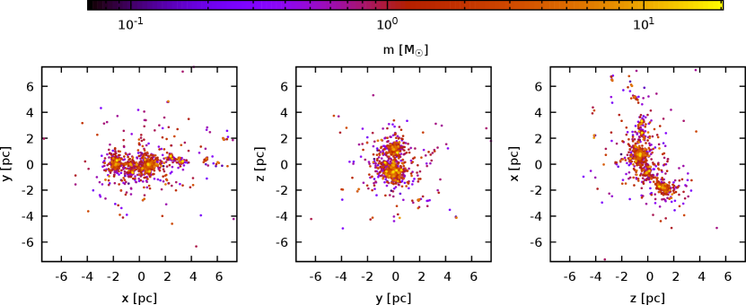
2.2 الخصائص الهيكلية لمحاكاة SPH
بغض النظر عن القيمة الأولية المحددة لـ ، فإن عمليات محاكاة SPH تقدم بنية متكتلة مع نجوم 11 1 القيمة الثابتة تقريبًا لـ تتبع حقيقة أن كفاءة تكوين النجوم مستقلة تقريبًا عن (انظر الجدول 1 في 2020MNRAS.496...49B). إن كفاءة تكوين النجوم تمليها بالفعل العمليات الفيزيائية المتضمنة في عمليات المحاكاة، والتي، في جميع الحالات، تبدأ من القيم نفسها لدرجة حرارة السحابة وكثافتها.، منظمة في حد أقصى من المجموعات الفرعية الرئيسية لـ m7e4 إلى حد أدنى 2 لـ m4e4. يتم تحديد المجموعات الفرعية بشكل تجريبي على أنها مجموعات من النجوم المجاورة تحتوي على أكثر من ، والتي تتجاوز طاقتها الكامنة الذاتية طاقة بقية النظام. يُظهر الشكل 1 إسقاطات و و لمواقع النجوم على مستويات الإحداثيات الثلاثة للنظام m1e4، مع إظهار كتلها بالألوان. لقد وجدنا فصلًا كتليًا بدائيًا بارزًا إلى حدٍ ما، حيث توجد النجوم الأثقل عادةً داخل المناطق المركزية للتكتلات الرئيسية والنجوم الأخف وزنًا على مسافات أكبر من المراكز الهندسية لهذه الأنظمة الفرعية. جميع الأنظمة فوق الحالة الفيريالية، حيث تتراوح من لحالة m1e4، إلى لـ m6e4.
| Name | ||||||
|---|---|---|---|---|---|---|
| m1e4 | 2523 | |||||
| m2e4 | 2571 | |||||
| m3e4 | 2825 | |||||
| m4e4 | 2868 | |||||
| m5e4 | 2231 | |||||
| m6e4 | 3054 | |||||
| m7e4 | 4214 | |||||
| m8e4 | 2945 | |||||
| m9e4 | 3161 | |||||
| m1e5 | 3944 |
من أجل تحديد خصائص الحالات النهائية لمحاكاة SPH، قمنا بتقييم توزيعاتها للمسافات بين الجسيمات ، وأطياف الكتلة ، وتوزيعات السرعة . يوضح الشكل 2 هذه التوزيعات لجزيئات الحوض في عمليات المحاكاة m1e4 وm3e4 وm5e4 وm7e4 و m9e4. توزيع المسافات بين الجسيمات يُظهر هيكلًا معقدًا للغاية مع العديد من التغييرات في المنحدرات. يؤدي التركيب المتكتلي للتوزيع المكاني للجسيمات إلى ظهور عدة قمم في ، تتوافق مع المسافات بين الكتل نفسها. بالنسبة لحالة m1e4 المحددة، تقع القمم تقريبًا في 0.1 و0.45 و1.75 و3 pc (كما هو موضح بالخطوط العمودية المنقطة)، والتي يمكن تحديدها على أنها المسافات بين المراكز التقريبية للكتل الرئيسية للجسيمات الموضحة في الشكل 1.
تتبع أطياف الكتلة لجزيئات الحوض تقريبًا بنية قانون القوة نفسها بين حد منخفض للكتلة وحد مرتفع لها. وترجع الاختلافات في الحد الأدنى للكتلة إلى اختلاف دقة الكتلة في عمليات المحاكاة الهيدروديناميكية، التي تُهيَّأ بكتل إجمالية مختلفة ولكن بعدد الجسيمات نفسه، كما هو موضح في القسم 2.1. وعند الكتل الأعلى، حيث تصبح العمليات الفيزيائية الداخلة في المحاكاة العامل المهيمن في تشكيل دالة الكتلة، تستعيد جميع الأطياف الميل نفسه. وقد لاءمنا أطياف الكتلة المستعادة عدديًا بالدالة المعتمدة:
| (2) |
حيث هو ثابت التطبيع، عبارة عن كتلة مقياس، والتي بالنسبة للأنظمة المستكشفة تكون دائمًا في النطاق بين 0.8 و4 M⊙، بينما يتراوح الأس من من إلى .
لا تُظهر توزيعات السرعة اعتماداً ذا صلة على القيمة الأولية المحددة لـ ، كما هو موضح في اللوحة اليمنى من الشكل 2. من الناحية النوعية، يتم وصف توزيع السرعة جيدًا من خلال توزيع ماكسويل-بولتزمان من إلى 5 km s-1 (القيمة المقابلة لذروة ) ثم يظهر اتجاه قانون السلطة. يتم تلخيص خصائص عمليات المحاكاة SPH في الجدول 1.
3 الطرق
فيما يلي، نوضح الإجراء الجديد الذي اتبعناه لبناء نموذج توليدي للظروف الأولية للعنقود النجمي. من حيث المبدأ، هدف النموذج التوليدي هو تعلم تمثيل لتوزيع متعذر المعالجة انطلاقًا من عدد محدود عادةً من العينات. يقوم المولد عادةً بالتحويل من مجال كامن يُعرَّف عليه توزيع بسيط، مثل توزيع غوسي متعدد المتغيرات على ، إلى مجال البيانات المعقد (على سبيل المثال 2021arXiv210305180R). في الآونة الأخيرة، كان معظم الاهتمام بالنماذج التوليدية مدفوعًا بمناهج التعلم العميق، مثل شبكات الخصومة التوليدية (2014arXiv1406.2661G). ومع ذلك، من حيث المبدأ، فإن النماذج الأبسط بكثير مثل نماذج ماركوف المخفية (1165342; eddy2004hidden) أو القواعد النحوية (على سبيل المثال، CHOMSKY1959137; 10.1007/978-3-642-76626-8_35; beaumont2009grammatical) تلبي تعريف النموذج التوليدي بالمعنى الأوسع المحدد أعلاه. وقد أثبت هذا الأخير فائدته في وصف وتوليد الكائنات التي تعرض البنية الكسورية، كما في حالة أنظمة Lindenmayer المطبقة على نمو النبات (LINDENMAYER1968280; LINDENMAYER1968300; prusinkiewicz2013lindenmayer).
يركز نهجنا التوليدي على إعادة إنتاج البنية الكسورية المعقدة للعناقيد النجمية المغمورة المستخرجة من عمليات المحاكاة الهيدروديناميكية (انظر، على سبيل المثال، الشكل 4 في 2020MNRAS.496...49B) من خلال التقاط العلاقات بين العناقيد الفرعية على مقاييس مختلفة باستخدام خوارزمية تجميع هرمية. وسيسمح لنا ذلك في النهاية بتوليد تحققات جديدة عبر تعديل بنيتها العيانية، أي العلاقات بين العناقيد الفرعية الكبيرة. ويمكن التعامل مع المعلمات التي تميز الخصائص الملائمة لهذه التكتلات وعلاقاتها بوصفها المجال الكامن لنموذجنا التوليدي.
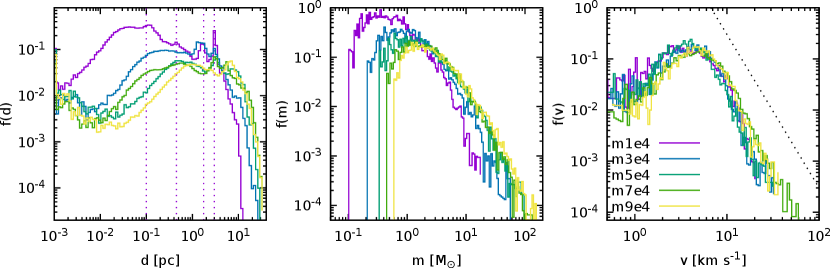
نمضي في خطوتين. أولاً، نحن نستخدم خوارزمية تجميع هرمية لتحديد كتل النجوم بمقاييس مختلفة في مساحة الطور لمخرجات المحاكاة الهيدروديناميكية الأصلية. يتم تنظيم المجموعات بواسطة الخوارزمية في شجرة هرمية ، حيث تحتوي العقدة الجذرية على مجموعة النجوم بأكملها وتمثل كل عقدة لاحقة انقسامًا ثنائي الاتجاه حيث يكون كل فرع عبارة عن مجموعة من النجوم، وصولاً إلى العقد الورقية التي تمثل النجوم الفردية. لكل عقدة ، نصف الخصائص الفيزيائية ذات الصلة للكتلة من حيث ناقل المسافة بين مراكز كتلة الكتل ، ومتجه السرعة النسبية ، ونسبة الكتلة بين المجموعتين. لوصف كيفية تقسيم الكتلة عند كل عقدة، نشير إلى ، والتي يتم تعريفها على أنها النسبة بين أخف المجموعتين الناتجتين والكتلة الإجمالية للعقدة. وبهذا التعريف، تقع نسب الكتلة بين (أقصى انقسام غير متساوي) و (انقسام متساوي الكتلة). ويرد وصف مجموعات النجوم من حيث خوارزمية التجميع الهرمية في القسم. 3.2، ولكن هدفه باختصار هو بنية التقاط كدالة للحجم، على غرار ما تم القيام به، على سبيل المثال، elmegreen06 من خلال تطبيق حبات التنعيم بأحجام مختلفة.
ثانيًا، نقوم بتوليد تحقق جديد لمواقع الجسيمات وسرعاتها من خلال وضع مجموعات من النجوم (والمجموعات الفرعية وصولاً إلى النجوم الفردية) في فضاء الطور. لبناء تحقق جديد للكتلة الإجمالية (التفاصيل في القسم 3.3)، نبدأ بجسيم واحد ساكن في أصل نظام الإحداثيات الخاص بنا، والذي يحتوي في البداية على الكتلة الإجمالية للكتلة . بعد ذلك، قمنا بتقسيمها بشكل متكرر إلى جسيمات جديدة ووضعها، في كل خطوة ، على مسافة من بعضها البعض، وتتحرك بسرعة نسبية . المتغيرات ذات الصلة ، ، ونسبة الكتلة ذات الصلة مأخوذة من الشجرة باستثناء الخطوة (الخطوات) الأولى، والتي يتم استخلاصها من شجرة المبنية على محاكاة مختلفة. في حين أن هذا لا يضمن أن النتيجة سيتم وصفها بواسطة شجرة ذات خصائص إحصائية تتطابق مع تلك الموجودة في ، إلا أنها مقنعة إرشاديًا على الأقل في حالة التوزيعات الهرمية للغاية. علاوة على ذلك، سوف نتحقق لاحقًا من أن التحققات الناتجة بهذه الطريقة لها مجموعة من الخصائص المرغوبة فيما يتعلق بالمجموعة الأصلية. وترد تفاصيل حول الإجراء التوليدي في القسم. 3.3.
3.1 التجميع الهرمي
تقوم خوارزميات التجميع الهرمية بترتيب البيانات في بنية تشبه الشجرة تمثل مجموعات متداخلة، ملتقطة بنية التجميع على مستويات مختلفة. على وجه الخصوص، نحن نستخدم خوارزمية التجميع التكتلية (انظر الفصل عن agnes في 1990fgda.book.....K). هذا يعني أن التسلسل الهرمي للمجموعات الشبيه بالشجرة مبني من الأسفل إلى الأعلى: تبدأ الخوارزمية من النقاط الفردية، وتدمج أكثرها تشابهًا في مجموعات حتى يتم استيفاء بعض معايير التوقف (على سبيل المثال، حتى يتبقى عدد محدد فقط من المجموعات). يمكن اعتبار طريقة العمل هذه بمثابة رسم شجرة ذات فرع لكل زوج من العناقيد التي تندمج22 2 إن إجراء رسم تسلسل هرمي للبنى الفرعية المدمجة قد يستدعي تاريخ شجرة الاندماج، والذي يستخدم في علم الكون لتتبع تجميع الهياكل الفرعية عبر الزمن (انظر، على سبيل المثال، rodriguezgomez15). ومع ذلك، لا تشير خوارزميات التجميع التجميعية إلى أي تطور في الوقت المناسب، ولكنها تستخدم بنية تشبه الشجرة لتحديد مجموعات من الحالات على مستويات مختلفة. . يمكن استخدام مخطط الأشجار لعرض بنية الشجرة الناتجة، مع العقد الورقية المقابلة للنقاط الفردية والجذر المقابل لمجموعة البيانات بأكملها. نحيل القارئ المهتم إلى 2019arXiv190604983P للحصول على توضيح لهذه الخوارزميات وغيرها من خوارزميات التجميع في سياق فلكي. هنا، اخترنا هذه الخوارزمية لأنها مناسبة تمامًا لدراسة البنية المعقدة لعمليات المحاكاة الهيدروديناميكية الموصوفة في القسم 2، إذ إنها مفيدة على مقاييس شديدة التباين ويمكنها التقاط العناقيد والعناقيد الفرعية ذات الأحجام المختلفة. ونستخدم التنفيذ الذي توفره مكتبة scikit-learn (scikit-learn)33 3 يمكن العثور على تفاصيل تنفيذ الخوارزمية في هذا الرابط..
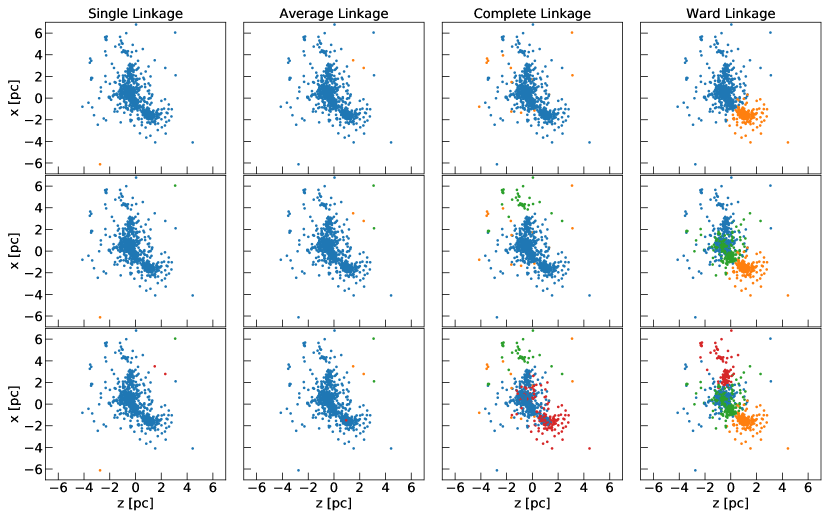
3.1.1 الربط
بالانتقال نحو جذر الشجرة، تدمج خوارزمية التجميع التكتلية في كل عقدة إما مجموعتين مع بعضهما البعض أو نقطة وحيدة في مجموعة. وتستند هذه العملية إلى مفهوم (عدم) التشابه بين المجموعات التي يمكن تعريفها بطرق أو روابط متعددة. لقد نظرنا في أربع روابط مختلفة وقمنا بتقييم أدائها في تجميع التوزيع المكاني لجسيمات الحوض.
-
•
تقوم الربط المفرد بدمج المجموعتين اللتين لهما أدنى مسافة بين أي نقطتين في المجموعتين:
(3) حيث يمثل و جسيمات الحوض التي تنتمي إلى المجموعة و، على التوالي، و هي المسافة بين جسيمين من هذا القبيل.
-
•
تقوم الربط المتوسط بدمج المجموعتين اللتين لهما أصغر متوسط مسافة بين جميع نقاطهما:
(4) -
•
تقوم الربط الكامل (المعروف أيضًا باسم الربط الأقصى) بدمج المجموعتين اللتين لهما أصغر مسافة عظمى بين نقاطهما:
(5) -
•
تقوم ربط Ward بدمج مجموعتين بحيث تكون زيادة التباين داخل جميع المجموعات في حدها الأدنى. ويؤدي ذلك غالبًا إلى مجموعات متقاربة الحجم نسبيًا. ويُعرَّف ربط Ward على النحو الآتي:
(6) حيث يشير الفهرس إلى الجسيم العام ذي الرتبة ، وتشير و و إلى مراكز المجموعات و و على التوالي. المعادلة 6 يتوافق مع الزيادة في التباين فيما يتعلق بالنقط الوسطى ذات الصلة حيث يتم دمج المجموعتين و. يؤدي دمج المجموعات إلى تقليل عدد النقط الوسطى بمقدار واحد، لذلك لا بد أن يزيد التباين، ولكن استخدام رابط Ward يؤدي إلى عمليات دمج عنقودية تقلل من زيادتها في كل خطوة.
يوضح الشكل 3 كيف يؤثر اختيار الارتباط على بنية العقد الثلاث الأولى لشجرة m1e4. يؤدي نهج الارتباط الفردي إلى كتلة فرعية واحدة كبيرة منفصلة عن عدد قليل من النجوم المعزولة. في الواقع، باتباع هذه الوصفة، تعتبر النقطتان اللتان تتلامسان في نقطة واحدة متشابهتين ويتم دمجهما في نقطة واحدة بسرعة كبيرة، حتى لو كان مركزا كتلتهما بعيدًا عن بعضهما البعض. في المقابل، يتم دمج النجوم المنعزلة فقط في الفروع النهائية. أداء الارتباط المتوسط والكامل ضعيف أيضًا، ويرجع ذلك على الأرجح إلى أن معيار الدمج الخاص بهم بسيط جدًا بحيث لا يتناسب مع البنية المعقدة للمجموعات الهيدروديناميكية. أخيرًا، تعمل وصلة Ward بشكل جيد في وصف البنية واسعة النطاق للمجموعة، حيث إنها تحدد بشكل صحيح الكتل الرئيسية وبالتالي فهي مفيدة حول بنية المجموعة. لهذا السبب، سننظر فيما بعد في ربط Ward فقط.
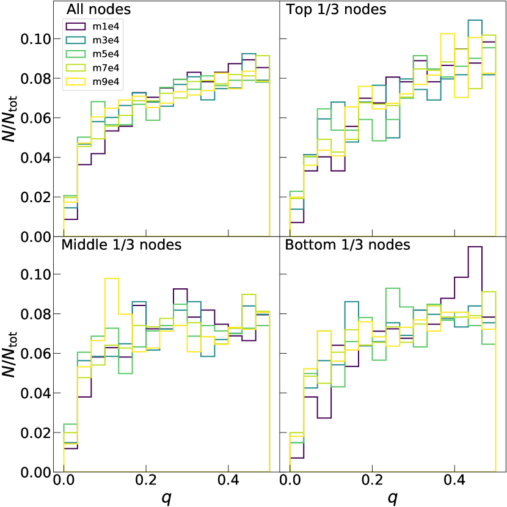
3.2 تطبيق التجميع الهرمي على العناقيد النجمية
قمنا بتطبيق المجموعات التكتلية على المجموعات النجمية من عمليات المحاكاة الديناميكية المائية المقدمة في القسم 2. تم بناء الأشجار من خلال الاعتماد على المسافة الإقليدية بين جزيئات الحوض في مساحة الطور كمقياس للاختلاف، بحيث تميل الجسيمات التي تتشارك في المواضع المتشابهة والسرعات المتشابهة إلى التجمع معًا. قبل تطبيق الخوارزمية، قمنا بقياس المواضع والسرعات حسب انحرافاتها المعيارية. هذه الخطوة أو ما شابهها ضرورية حتى لا تعتمد نتيجة التجميع لدينا على الاختيار التعسفي لوحدة قياس الوقت.
يُظهر العمود الأيمن من الشكل 3 مجموعات جزيئات الحوض المقابلة للعقدتين الأوليين من الشجرة المستفادة (بدءًا من الجذر). تقسم العقدة الأولى الأحواض إلى قطعتين كبيرتين، وتقسم العقدة الثانية كتلة أصغر من إحدى هذه الأجزاء44 4 حتى عندما نصف الشجرة من الجذر إلى الأعلى (نكتب أحيانًا من حيث الانقسامات/الانقسام)، فإن الطرق التجميعية تبني الشجرة من الأوراق، أي جزيئات الحوض الفردية.. يؤدي اختيارنا لاستخدام وصلة Ward إلى تقسيم المجموعات الفرعية الأكثر ضخامة في الفروع الأولى للشجرة، مما يؤدي إلى شجرة متوازنة بشكل عام. وبالتالي فإن التقسيم الأول يعطي معلومات حول توزيع المجموعات الفرعية على نطاقات كبيرة، وبالانتقال نحو أوراق الأشجار، يتم تقسيم المجموعات الفرعية إلى كتل فرعية أصغر وأصغر، حسب الرغبة في مهمتنا.
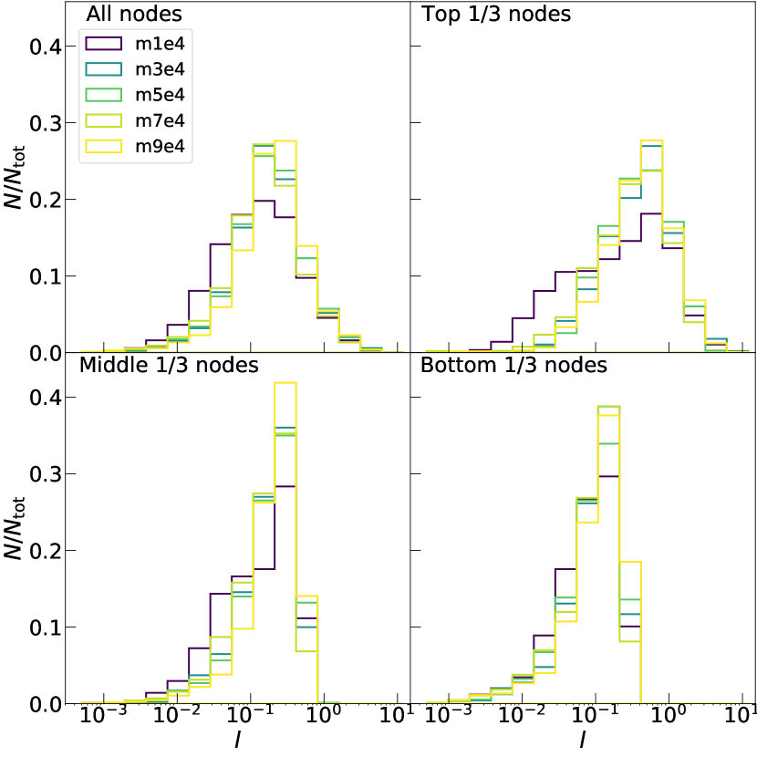
يوضح الشكل 4 نسب الكتلة بين الكتل الفرعية المتفرعة على أعماق مختلفة داخل الشجرة. لا يتأثر توزيع نسب الكتلة بشكل خاص بعمق الشجرة. يكون هذا متوقعًا إذا كان هيكل توزيع جسيمات الحوض ثابتًا بالمقياس، حيث أن التحرك أسفل الشجرة (نحو الأوراق) يستكشف المقاييس الأصغر عن طريق البناء. بالإضافة إلى ذلك، يوضح الشكل 4 أن التوزيع متشابه عبر عمليات محاكاة مختلفة، ويمتد على نطاق من الكتلة الإجمالية بترتيب من حيث الحجم. لتقييم ما إذا كان يمكن اعتبار نسب الكتلة مستمدة من التوزيع نفسه (بعد إعادة قياس الكتلة بشكل صحيح)، أجرينا اختبارات كولموغوروف–سميرنوف الزوجية. على الرغم من الاختبارات المتعددة، فإننا لا نحصل أبدًا على قيمة p أقل من ، لذلك ليس لدينا أي سبب للشك في أن التوزيعات مختلفة. كما أجرينا الاختبار نفسه على التوزيعات الفرعية الموضحة في الشكل 4 كلٌّ على حدة. ويحصل اختبارنا دائمًا على قيم احتمالية أعلى من ، باستثناء وحيد هو المقارنة بين العقد الوسطى في m1e4 وm9e4، حيث تكون القيمة الاحتمالية . تشير هذه النتيجة إلى أنه على الرغم من بعض التقلبات الإحصائية، يتم إجراء تقسيم الكتلة بالطريقة نفسها على مقاييس مختلفة لجميع عمليات المحاكاة.
يمكن استخلاص معلومات مماثلة حول سلوك القياس لعمليات المحاكاة لدينا من الأشكال 5 و 6، حيث نعرض توزيع المسافات بين الكتل () وسرعاتها النسبية (). على وجه الخصوص، تتحول مواضع الحد الأقصى للتوزيعات إلى قيم أدنى عن طريق الانتقال من العقد العلوية إلى العقد السفلية، مما يؤكد أن الشجرة تفكر في مقاييس أصغر فأصغر. وفي هذه الحالة أيضًا، تظهر جميع عمليات المحاكاة توزيعات متشابهة جدًا على كل مستوى لكل من المسافات والسرعات النسبية. يظهر توزيع الزوايا بين السرعة النسبية والمسافة، ، في الشكل 7. يبدو هذا التوزيع مسطحًا باستثناء ارتفاع عند يقابل سرعة نسبية موازية لمتجه الفصل بين الكتل، وهو ما يُتوقَّع في عنقود فوق فيريالي يمر بتمدد عام.
يمكن استخلاص المعلومات الفيزيائية ذات الصلة من خلال النظر في العلاقة بين كميات العقدة نفسها في شجرة التجميع التكتلي. يوضح الشكل 8 العلاقة بين مسافة الكتل الفرعية وسرعتها النسبية لكل عقدة. تُظهر الكتل الفرعية الرئيسية، التي تتوافق مع العقد الأقرب إلى الجذر، تناسبًا مباشرًا بين هاتين الكميتين، ربما بسبب الدوران الصلب. في المقابل، على أصغر المقاييس، تُظهر السرعة النسبية للجسيم الفردي ميلًا إلى الانخفاض مع الجذر التربيعي للمسافة بينهما، كما يحدث لمجموعتين (أو حتى نجمين منفردين) تدوران إحداهما حول الأخرى تحت تأثير الجهد أحادي القطب لكل منهما. ومن اللافت أن جميع الحركات النسبية بين الكتل تقع بين حدي الدوران الصلب والحركة الكبلرية.
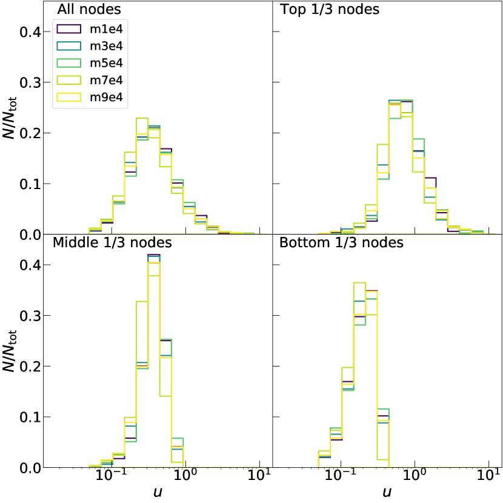
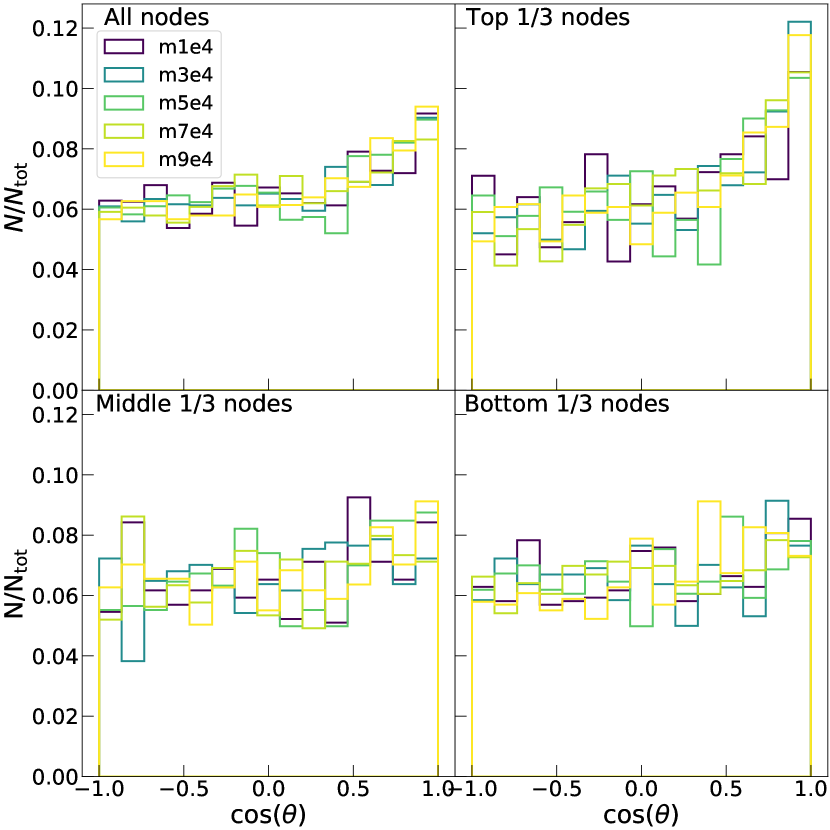
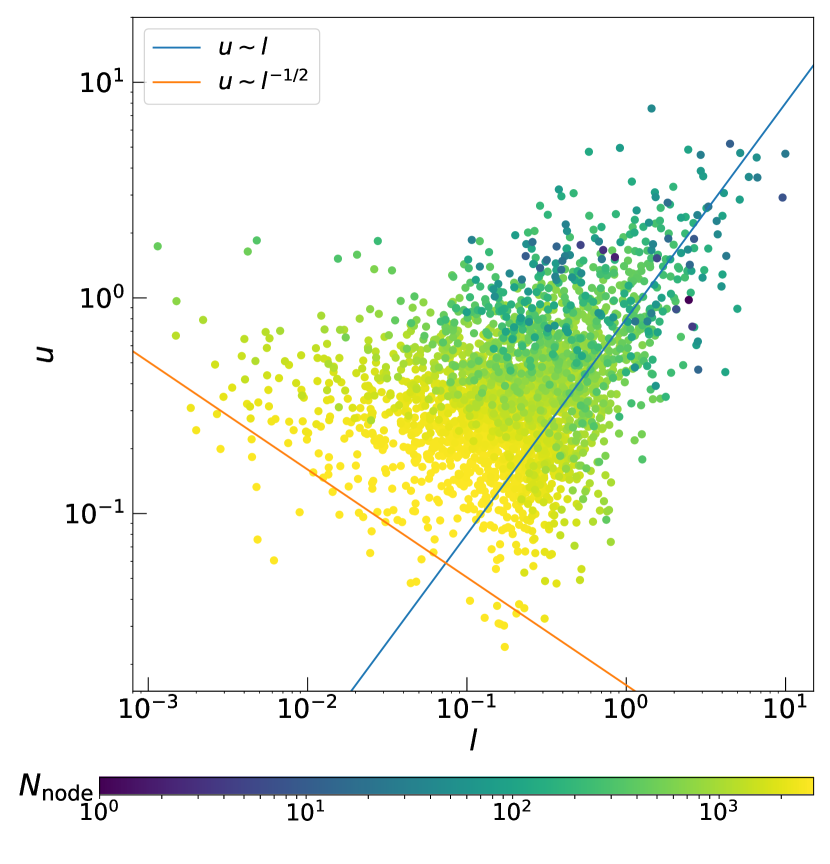
3.3 توليد تحققات جديدة
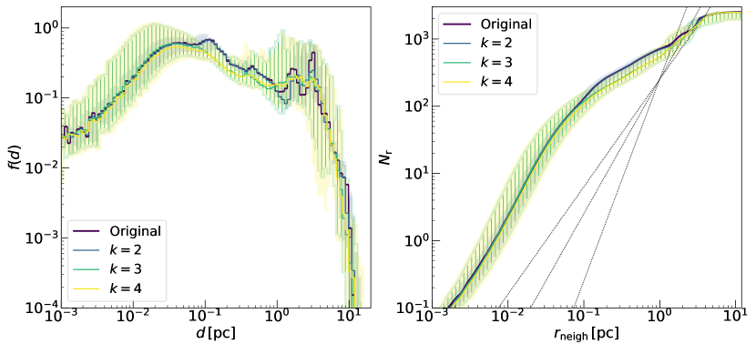
كما هو موضح في القسم 3.2، فإن تطبيق خوارزمية التجميع التكتلية على المجموعات النجمية يسمح لنا بإبلاغ شجرة بترميز بنيتها الهرمية. ترتبط كل عقدة من الثلاثة بالخصائص ذات الصلة ، ، و، التي تحدد العلاقات بين المجموعات الفرعية المقابلة للفروع المغادرة من العقدة. وبالتالي، تقوم الشجرة بشكل أساسي بتشفير التعليمات لإنشاء عنقود نجمي جديد، حيث يمكن اجتيازه من الأعلى، وتقسيم الجسيم الأولي بشكل متكرر حتى الوصول إلى مستوى الورقة، حيث يتم إنتاج النجوم الفردية. في حالتنا، الهدف هو تغيير المجموعة على مستوى البنية العالمية -الأقرب إلى جذع الشجرة-، وبالتالي إنشاء تكوينات مختلفة للمجموعات الفرعية مع الحفاظ على خصائص النطاق الصغير للكتل الفرعية (مثل بنيتها الكسورية). وبالتالي نأخذ الكميات ، ، و المرتبطة بالعقد لـ و استبدلها بالكميات ، ، و المرتبطة بالعقد لشجرة أخرى ، تم تعلمها من مجموعة مختلفة من جزيئات الحوض. يمثل إجراء التطعيم هذا طريقة للجمع بين الخصائص واسعة النطاق لمحاكاة واحدة مع الخصائص الصغيرة لمحاكاة أخرى. للحصول على النتائج المعروضة في القسم. 4، هذه العقد هي مأخوذة بشكل عشوائي من عمليات المحاكاة الأخرى.
يتم تنفيذ إجراء التوليد على النحو التالي. أولاً، نعتبر الجسيم الذي كتلته مساويًا للكتلة الإجمالية للكتلة قيد النظر، والموضع في مركز كتلة الكتلة. يتم تقسيم الجسيم أولاً إلى جسيمين كتلتهما و، بحيث يكون و. يتم تعيين مواقع وسرعات الجسيمات الجديدة بحيث يكون مركز كتلتها ساكنًا في أصل النظام، ومتجه المسافة الخاص بها هو ، وسرعتها النسبية . يتم بعد ذلك تكرار إجراء التقسيم هذا حتى يتم الحصول على مجموعة تحتوي على نفس العدد من الجسيمات باعتبارها المجموعة المرجعية. في كل خطوة، يتم اختيار الجسيم إلى الانقسام من خلال النظر في ترتيب التقسيم نفسه باعتباره الشجرة المرجعية الأصلية. قد يؤدي هذا الإجراء في أوقات إلى جزيئات ذات كتلة منخفضة جدًا. نقوم بإزالة هذه الأجسام ذات الحجم الكوكبي مع قطعها عند الحد الأدنى من كتلة النجوم الأصلية التي تم تعلم عليها.
3.3.1 عمق التطعيم
في الإجراء الموصوف أعلاه، يحدد اختيار عمق التطعيم مدى اختلاف التحققات الجديدة عن النظام الأصلي. وتؤدي القيمة المنخفضة لـ إلى تحققات شديدة الشبه بالنظام الأصلي على جميع المقاييس. وفي المقابل، عندما يكون مرتفعًا جدًا، فإن المقاييس الصغيرة تتغير هي أيضًا بصورة كبيرة. في حالتنا، نريد إنشاء عناقيد جديدة تشبه العنقود الأصلي، ولكن في الوقت نفسه لا يمكن اعتبارها نسخًا منه. قمنا بتقييم مدى تأثير اختيار عمق التطعيم على البنية المكانية للأجيال الجديدة. على وجه الخصوص، أخذنا في الاعتبار توزيعات المسافات والأبعاد الكسورية التي تم الحصول عليها عن طريق توليد مجموعات من مائة تحقق جديد لـ m1e4، بقيم مختلفة لـ . تُظهر اللوحة اليسرى من الشكل 9 الشكل العام لتوزيعات المسافات بين الجسيمات. وكما هو متوقع، فإن التحققات التي تم الحصول عليها عن طريق تعديل عقدة واحدة فقط تتطابق مع التوزيع الأصلي بشكل أفضل من تلك التي تغير عقدتين أو ثلاث عقد، وتقدم أصغر انتشار. تتوافق القمم مع كتل فرعية من الأحواض، والتي تتشكل بأعداد وأحجام مختلفة في كل تحقق. على مسافات صغيرة، تستعيد التحققات الجديدة الاتجاه العام للتوزيع الأصلي، كما هو مقصود في طريقتنا. بالنسبة لحالة ، يحدث هذا عند حوالي 1 pc، مما يعني أنه يتم تعديل المقاييس الكبيرة جدًا فقط (المسافة بين المجموعات الفرعية الرئيسية). وبزيادة ، يتم أيضًا تغيير المقاييس الأصغر حجمًا، ويتم استعادة الشكل الأصلي لاحقًا. يشير هذا إلى أن تغييرات قليلة جدًا تكفي لإنتاج أجيال يمكن تعريفها على أنها مختلفة عن المجموعة الأصلية. تتوافق توزيعات مع المحاكاة الأصلية عبر نطاق المسافات.
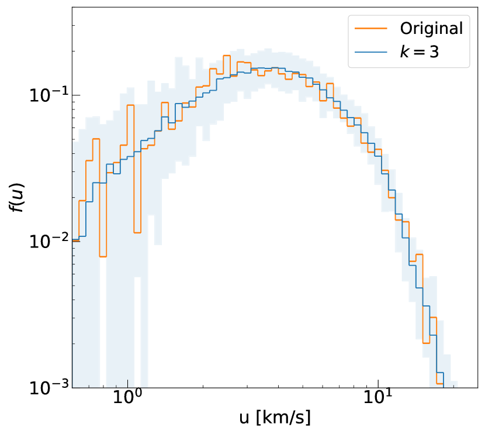
في اللوحة اليمنى من الشكل 9، قمنا بحساب البعد الكسري عن طريق متوسط عدد النجوم المجاورة للنجوم ضمن مسافة معينة، بعد 2020MNRAS.496...49B. لا يتم وصف توزيع جيران m1e4 بواسطة قانون قوة واحد لمؤشر غير صحيح ، كما هو متوقع في بنية كسورية بسيطة، ولكنه يقدم تغيرين في الميل عند حوالي و pc (انظر أيضًا 2020MNRAS.496...49B). لتوجيه العين، تشير الخطوط الثلاثة المنقطة إلى توزيعات المسافة النظرية في حالة التوزيع الكسري النقي باستخدام ، لـ ، و، و. تتوافق التوزيعات المولدة مع الاتجاه العام والتغيرات في ميل المحاكاة الأصلية بشكل جيد للغاية، مما يوضح أن طريقتنا التقطت البنية الأساسية لتوزيع الجسيمات في مساحة 3D على جميع المقاييس. كما هو الحال بالنسبة لتوزيع المسافة بين الجسيمات، فإن اختيار ينتج عنه اختلافات بسيطة فقط عن ملف تعريف m1e4 الأصلي. في ما يلي، سنركز على الأجيال التي تحتوي على ، والتي تسمح بإنتاج توزيع للمجموعات التي يمكن تمييزها ولكنها لا تزال متسقة مع المجموعة الأصلية على جميع المقاييس.
يوضح الشكل 10 توزيع السرعات للأجيال الجديدة التي تم الحصول عليها عن طريق ضبط ، مقارنة باتجاه جسيم الحوض الأصلي. يتطابق متوسط الأجيال الجديدة مع التوزيع الأصلي في جميع السرعات، سواء على ذيل السرعة المنخفضة، حيث يبدو أن اتجاه ماكسويل-بولتزمان محفوظ، أو على اتجاه قانون القوة الأكثر وضوحًا عند السرعات العالية. عند القيم المنخفضة جدًا ()، يتسبب العدد المنخفض جدًا من النجوم في تقلبات كبيرة في توزيع الأجيال الجديدة، لكن اتجاهها المتوسط لا يزال متسقًا تمامًا مع الاتجاه الأصلي.
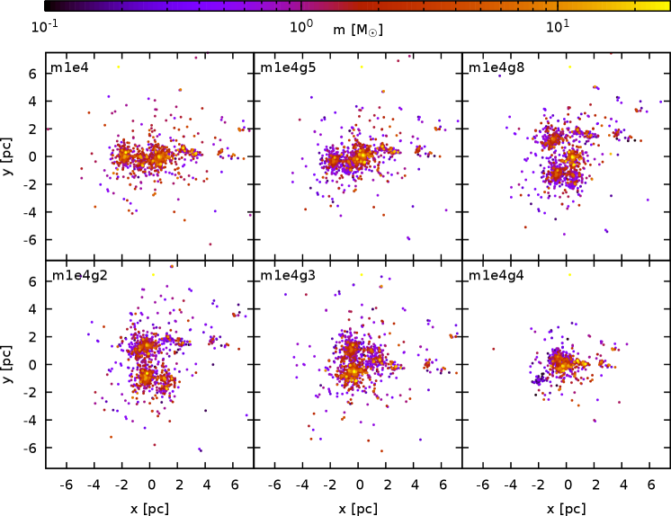
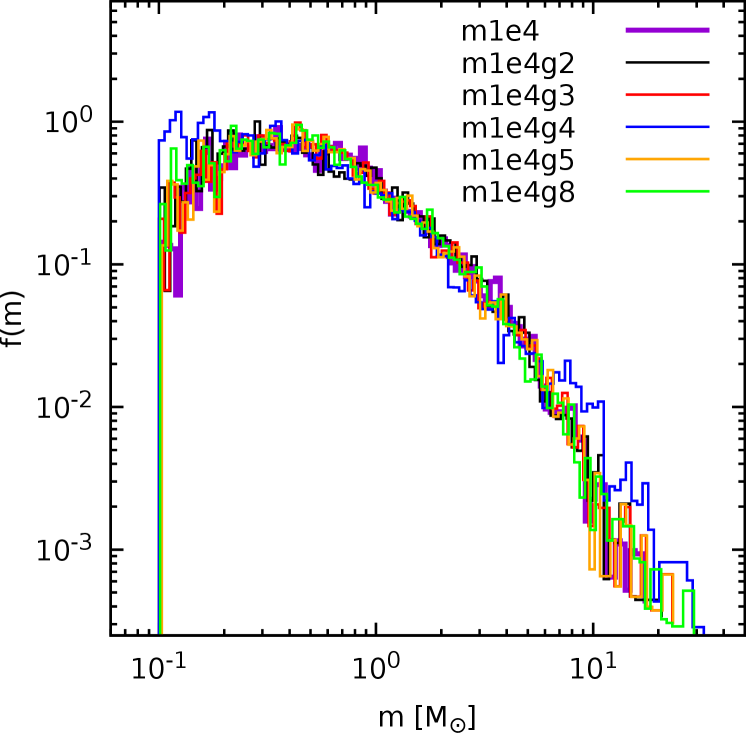
4 النتائج
4.1 خصائص الأنظمة المولدة حديثًا
في هذا القسم، نناقش خصائص الأنظمة التي تم إنشاؤها باستخدام الإجراء الخاص بنا بدءًا من المحاكاة m1e4، والتي تقدم أعلى دقة. يوضح الشكل 11 التوزيعات المكانية لخمسة أجيال جديدة تم الحصول عليها بالطريقة الموضحة في القسم 3.3، مقارنة بالطريقة الأصلية. تُظهِر الأجيال الجديدة تكوينًا فرعيًا قويًا، مع عدد مختلف من الكتل، اعتمادًا على التحقق الفردي، الذي استمد فروعًا من عمليات محاكاة مختلفة. أيضًا، لا تزال هناك درجة قوية من الفصل الجماعي موجودة في المجموعات الفرعية المفردة، كما يتضح من الترميز اللوني. هذا الفصل الجماعي البدائي في التحققات الفردية يطابق نوعيًا الفصل الموجود في المجموعة الأصلية.
في الشكل 12، قمنا بمقارنة التوزيع الشامل لـ m1e4 مع توزيع الأجيال الجديدة. في هذه الحالة، تترك طريقتنا ميل دالة الكتلة دون تغيير إلى حد كبير بالنسبة لمعظم طيف الكتلة. توجد بعض التناقضات عند حدود الطيف الكتلي. ويرجع ذلك إلى حقيقة أن التغيير في العقد الأولى قد يؤدي إلى تقسيم جسيم صغير نسبيًا أكثر أوقات مما كان عليه في المجموعة الأصلية، ويترك الجزيئات الأكبر حجمًا أقل انقسامًا. وهذا ما يفسر العدد الأكبر من الجسيمات عند حدود طيف الكتلة مقارنة بالجسيمات الأصلية. يرجع القطع الأكثر وضوحًا عند إلى حقيقة أن جميع الكتل الموجودة تحت هذه العتبة تتم إزالتها بشكل منهجي. بوجه عام، تكون الملاءمة مع المعادلة 2 جيدة إلى حد ما، إذ تعطي قيمًا لـ حول ، وهو ما يذكّر بمنحدر 1955ApJ...121..161S.
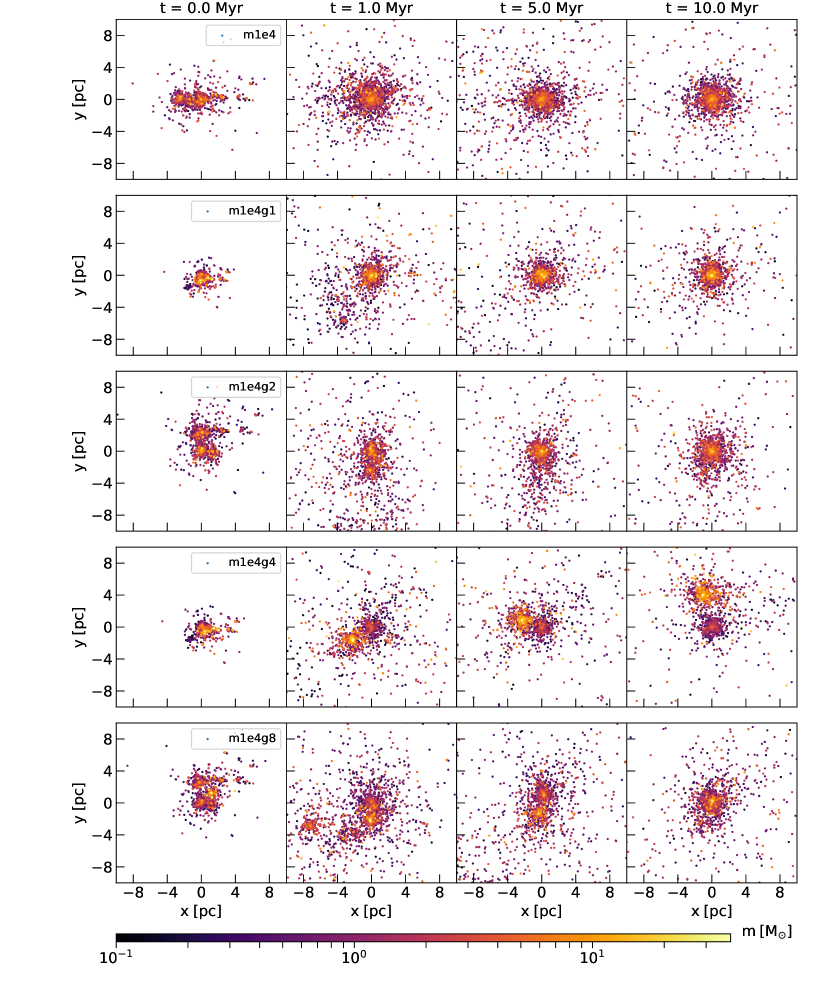
نظرًا لإعادة توزيع مواضع الجسيمات وسرعاتها وكتلها في عملية التوليد، قد تتغير قيمة النسبة الفيريالية الإجمالية بشكل كبير (فيما يتعلق، في هذه الحالة، بقيمة لحالة m1e4) تتراوح من الحد الأدنى إلى الحد الأقصى . ومن الواضح أن التطور الديناميكي المستقبلي يعتمد بشكل كبير على النسبة الفيريالية، والتي بدورها تتأثر بشدة بالذيل الأيسر للمسافات الزوجية للجسيمات. يوجد بالفعل هامش من الاختلاف في المسافات القصيرة بين التحققات، كما هو مبين في الشكل 9. ومع ذلك، فإن أقصر المسافات في أي نظام نجمي تتوافق بشكل أساسي مع نصف محور النجوم الثنائية. لم يتم تصميم عمليات المحاكاة الديناميكية المائية لدينا لإعادة إنتاج وظيفة الكتلة الأولية الرصدية (2021MNRAS.501.2920B) بأمانة ولا لالتقاط الخصائص الثنائية. في torniamenti21، نقدم توزيعًا ثنائيًا واقعيًا بإجراء منفصل. في حين أن طاقة الربط الثنائية تمثل جزءًا كبيرًا من إجمالي طاقة الربط في العديد من السيناريوهات الواقعية، فإن النطاق الزمني الذي يتم خلاله تبادل هذه الطاقة مع الكتلة ككل أطول بكثير من وقت الذوبان للنظام النموذجي قيد النظر: الثنائيات الصلبة خاملة ديناميكيًا على المدى القصير. للتحقق من أن هذا هو مصدر عدم التطابق المرصود في النسبة الفيريالية، أجرينا تشخيصين. أولًا، أعدنا حساب النسبة الفيريالية عدد مرة، مع استبعاد جسيم مختلف في كل مرة. ويمنحنا ذلك طريقة متينة لتحديد النسبة الفيريالية، إذ يكون الانتشار في التوزيع الناتج مدفوعًا بالحالات التي استُبعد فيها أحد عضوي ثنائي قريب جدًا. في جميع الحالات، تقع قيمة للنظام الأصلي بوضوح داخل توزيع الذي حُصل عليه بإزالة جسيم واحد في كل مرة من جيل معين.
ثانيًا، حسبنا أيضًا بعد استبعاد طاقة الارتباط للنجوم التي تقع فواصلها دون عتبة متغيرة بين عُشر ونصف متوسط المسافة بين الجسيمات. ووجدنا أن الاختلافات الكبيرة في قيمة المرصودة في العناقيد المولدة تعود أساسًا إلى اختلاف توزيعات الجسيمات شديدة الارتباط في العناقيد المولدة ونظام جسيمات الحوض الأصلي الذي أنتجته محاكاة SPH. وبالتالي فإن القيم المختلفة للنسبة الفيريالية ستؤدي إلى تطور ديناميكي مماثل على المقاييس الزمنية محل الاهتمام، كما نبيّن أدناه بتطوير تحققاتنا عبر محاكاة -جسم المباشرة. ونورد المعاملات الفيريالية الاسمية لتحققاتنا المولدة، إلى جانب خصائص أخرى، في الجدول 2.
4.2 محاكاة N-جسم
تهدف طريقتنا إلى إنشاء عينات كبيرة من الشروط الأولية لمحاكاة -جسم. ولاختبار أن تحققاتنا مناسبة فعلًا لهذا الاستخدام، طورنا عبر محاكاة -جسم المباشرة العناقيد الأصلية الثلاثة (m1e4 وm3e4 وm6e4) و10 عناقيد مولدة مختلفة لكل واحد من هذه العناقيد الأصلية الثلاثة. ويعد التحقق من أن تطور العناقيد المولدة ليس مطابقًا للعنقود الأصلي ولا مختلفًا عنه اختلافًا جذريًا أحد محكات الاختبار الرئيسة لطريقتنا. ففي الواقع، لا يمكن استخدام طريقتنا بنجاح إلا إذا تطورت العناقيد الجديدة بطريقة مشابهة للعنقود الأصلي، مع اختلافها عنه بما يكفي كي لا تكون نسخة مطابقة. ومن الناحية المثالية، ينبغي أن تتصرف العناقيد المولدة كتحققات عشوائية مختلفة للتوزيعات الفيزيائية الكامنة نفسها.
| Name | |||||
|---|---|---|---|---|---|
| m1e4g1 | 2006 | ||||
| m1e4g2 | 2509 | ||||
| m1e4g3 | 2512 | ||||
| m1e4g4 | 1998 | ||||
| m1e4g5 | 2512 | ||||
| m1e4g6 | 2491 | ||||
| m1e4g7 | 2081 | ||||
| m1e4g8 | 2512 | ||||
| m1e4g9 | 2196 | ||||
| m1e4g10 | 2496 | ||||
| m3e4g1 | 2765 | ||||
| m3e4g2 | 2805 | ||||
| m3e4g3 | 2811 | ||||
| m3e4g4 | 2719 | ||||
| m3e4g5 | 2747 | ||||
| m3e4g6 | 2774 | ||||
| m3e4g7 | 2750 | ||||
| m3e4g8 | 2770 | ||||
| m3e4g9 | 2628 | ||||
| m3e4g10 | 2764 | ||||
| m6e4g1 | 2747 | ||||
| m6e4g2 | 2823 | ||||
| m6e4g3 | 2900 | ||||
| m6e4g4 | 2718 | ||||
| m6e4g5 | 2967 | ||||
| m6e4g6 | 2752 | ||||
| m6e4g7 | 2998 | ||||
| m6e4g8 | 2833 | ||||
| m6e4g9 | 3001 | ||||
| m6e4g10 | 3015 |
بعد اسم العنقود المولد (العمود 1)، نورد العدد الكلي للنجوم (العمود 2)، وعدد التكتلات الفرعية العيانية (العمود 3)، والنسبة الفيريالية (العمود 4)، ومعامل لدالة ملاءمة طيف الكتلة (المعادلة 2، العمود 5)، والكتلة الكلية للنجوم (العمود 6).
أجرينا عمليات المحاكاة باستخدام رمز -جسم المباشر nbody6++gpu (wang15). وبفضل مخطط الجوار (nitadori12)، يتعامل nbody6++gpu بكفاءة مع إسهامات القوة التصادمية على المقاييس الزمنية القصيرة، وكذلك مع الإسهامات على الفواصل الزمنية الأطول التي يساهم فيها جميع أعضاء النظام. ويتضمن تكامل القوة أيضًا مجال مد خارجيًا ثابتًا شبيهًا بالجوار الشمسي (wang16). ولم ندرج التطور النجمي في تشغيلاتنا، توخيًا للبساطة ولجعل المقارنة مع العنقود الأصلي أوضح. طورنا العناقيد لمدة .
يعرض الجدول 2 الخصائص الأولية الرئيسية للمجموعات التي تم إنشاؤها والتي أجرينا عمليات محاكاة N-جسم لها. يوضح الشكل 13 الإسقاط في المستوى للمجموعة الأصلية m1e4 وأربعة أجيال في أزمنة مختلفة. يُظهر التطور العالمي للمجموعات المولدة الجديدة مجموعة متنوعة من التكوينات اعتمادًا على التوزيع المختلف للكتلة. في بعض الحالات، توجد كتل فرعية متميزة في وتتفاعل مديًا مع بعضها البعض قبل الاندماج في النهاية. في حالة m1e4g4، لا تزال هناك مجموعتان فرعيتان متميزتان موجودتان في .
يمكن تقديم وصف كمي أكثر للتطور العالمي للمجموعات من حيث تطور نصف قطر 10% و50% لاغرانجي ( و)، المتمركزين في مركز الكثافة55 5 تم حساب الكثافة المحلية حول كل نجم على أنها كثافة كرة التي تتضمن أقرب النجوم 300.. يوضح الشكلان 14 و15 تطور و للمجموعات الأصلية والمجموعات التي تم إنشاؤها. وفي جميع الأحوال فإن التطور الأصلي يقع ضمن حدود توزيع التجمعات المتولدة مما يدل على انتشار كبير. يتوافق هذا الانتشار مع التقلبات العشوائية الكبيرة التي نتوقعها في تطور مثل هذه المجموعات منخفضة الكتلة ((انظر، على سبيل المثال، torniamenti21)).
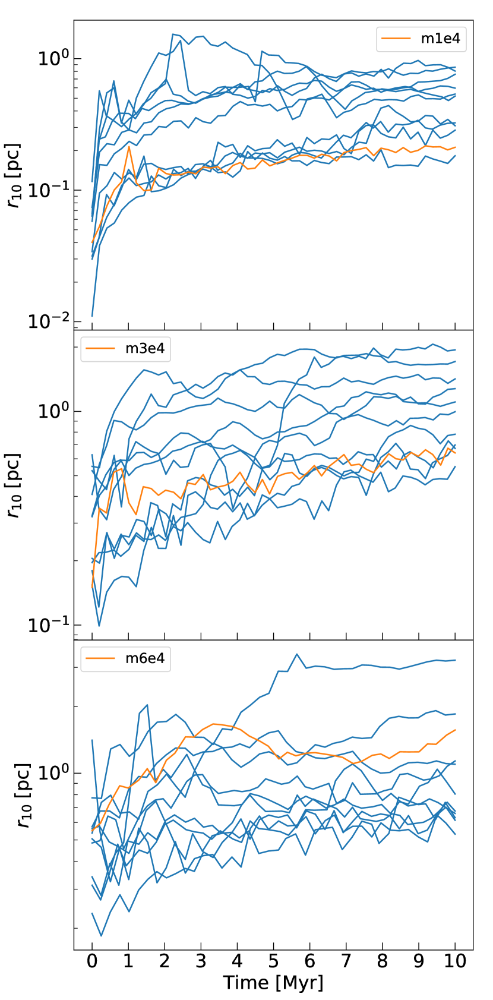
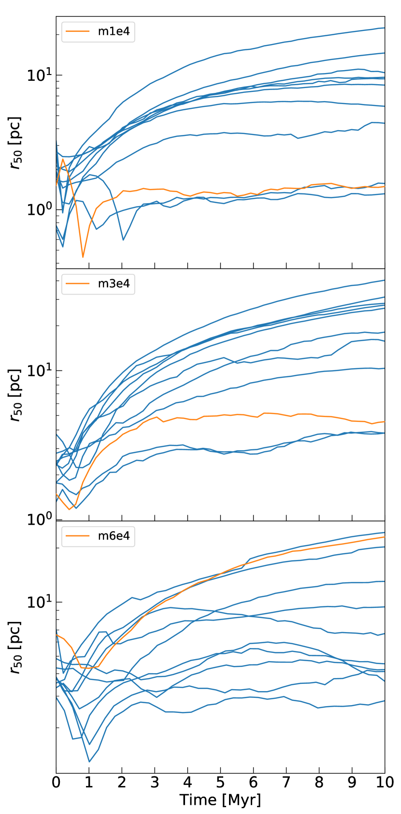
5 مناقشة واستنتاجات
قدمنا طريقة جديدة لتوليد عدد من التحققات الجديدة من مجموعة معطاة من الشروط الأولية (كتل الجسيمات ومواضعها وسرعاتها) الناتجة من عمليات المحاكاة الهيدروديناميكية. وقد بُنيت هذه التحققات بحيث تُظهر بنية مختلفة على المقاييس الكبيرة، لكنها تشترك في خصائص متشابهة على المقاييس الأصغر، مع الحفاظ بوجه خاص على البعد الكسري للمحاكاة الأصلية. وقد بيّنا أنها يمكن أن تُستخدم شروطًا أولية لمحاكاة -جسم، منتجةً تطورًا مماثلًا لتطور العنقود الأصلي. ويشير ذلك إلى أن طريقتنا مناسبة لاشتقاق الشروط الأولية لمجموعة كبيرة من محاكاة -جسم بجزء ضئيل للغاية من التكلفة الحسابية اللازمة لتوليد الشروط الأولية من محاكاة هيدروديناميكية.
يعتمد نهجنا الجديد على إبلاغ بنية التجميع الهرمية (ممثلة كشجرة) من بيانات الحالة الأولية الأصلية من خلال التجميع التكتل. يتم تحويل هذا لاحقًا إلى تحققات جديدة عن طريق تعديل الفروع الأولية للشجرة (ترميز العلاقات بين أكبر المجموعات الفرعية في المحاكاة). يؤدي هذا إلى تحقيق خصائص عيانية مختلفة عن الخصائص الأصلية (على سبيل المثال، عدد الكتل الكبيرة والمسافات بينها)، مع الحفاظ تقريبًا على خصائص البنية صغيرة الحجم المسؤولة عن معظم التطور الديناميكي (على سبيل المثال، توزيع المسافات الزوجية بين النجوم الفردية). من حيث المبدأ، يعد هذا المخطط مرنًا للغاية، مما يسمح باختيار مقدار البنية واسعة النطاق التي نتحكم فيها بشكل مباشر، عن طريق اختيار عدد الفروع الأولية التي نقوم بتعديلها.
إن التحققات التي حصلنا عليها باستخدام طريقتنا تشبه نوعيًا المحاكاة الأصلية عند تصورها في مساحة ثلاثية الأبعاد. في حالتنا، تم إنشاء التوزيع الأصلي للنجوم من خلال عمليات المحاكاة الهيدروديناميكية للمجموعات المدمجة، لذلك يبدو أن تحققنا الجديد لا يمكن تمييزه نوعيًا عن مخرجات هذه المحاكاة. كما أن طيف الكتلة وتوزيع السرعة يشبهان إلى حد كبير المحاكاة الأصلية. يكشف توزيع عدد الجيران كدالة للمسافة أن البعد الكسري لتحققاتنا والبعد الخاص بالمحاكاة الأصلية يتطابقان على مقاييس مختلفة (كلاهما يُظهر نمطًا كسوريًا معقدًا مشابهًا).
أخيرًا، أجرينا محاكاة -جسم مباشرة لعينة من الشروط الأولية المولدة لثلاثة عناقيد نجمية أصلية مختلفة. في جميع الحالات، تُظهر الأجيال الجديدة تطورًا واقعيًا على جميع المقاييس، وتحيط بتطور العنقود الأصلي، كما يتضح من اتجاه نصفي القطر اللاغرانجيين 10% و50%. يشير تحليلنا إلى أن هذه الطريقة هي طريقة واعدة لتوليد توزيعات جديدة للكتلة ومساحة الطور من عمليات المحاكاة الهيدروديناميكية الحالية، وبالتالي زيادة عينة من الشروط الأولية لعمليات محاكاة N-جسم. إن تسريع الحساب الذي تم الحصول عليه بواسطة طريقتنا الجديدة هائل: يتطلب توليد الظروف الأولية من عمليات المحاكاة الهيدروديناميكية حوالي من الساعات الأساسية لكل محاكاة، بينما يستغرق إجراءنا حوالي 10 من الثواني الأساسية لتدريب توزيع الشجرة الأولي وإنشاء تحقق جديد.
شكر وتقدير
نشكر الحكم المجهول على تعليقاته المفيدة التي ساعدت في تحسين هذا العمل. تلقى هذا المشروع تمويلًا من برنامج البحث والابتكار Horizon 2020 التابع للاتحاد الأوروبي بموجب اتفاقية المنحة Marie Skłodowska-Curie رقم 896248. تعتمد مساهمة MP الأولية في هذه المادة على العمل المدعوم من Tamkeen بموجب منحة معهد أبحاث NYU Abu Dhabi CAP3. تقر MM وAB وGI بالدعم المالي من European Research Council لمنحة ERC الموحدة DEMOBLACK، بموجب العقد رقم. 770017. تعترف PFDC بالدعم المالي من مشروع MIUR-PRIN2017 الوصف الخشن للأنظمة غير المتوازنة وظواهر النقل (CO-NEST) n.201798CZL. تعترف MM وMCA بالدعم المالي من مؤسسة العلوم الوطنية النمساوية من خلال المنحة المستقلة FWF P31154-N27.
توفر البيانات
ستتم مشاركة البيانات الأساسية لهذه المقالة بناءً على طلب معقول للمؤلفين المقابلين.